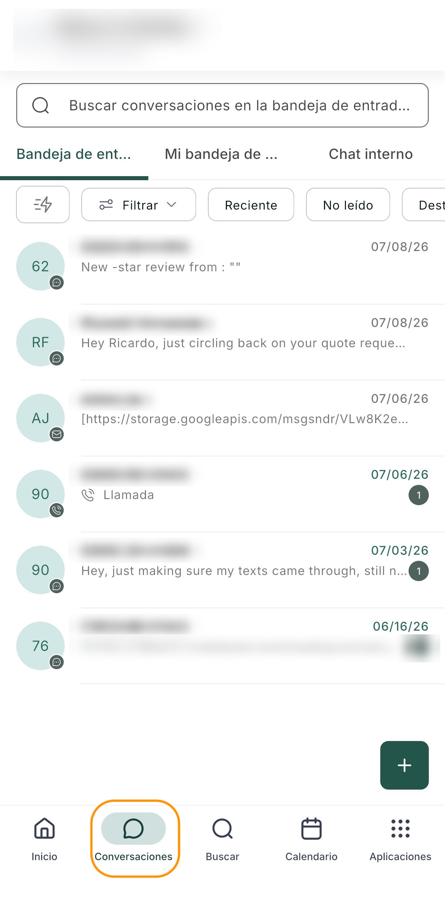
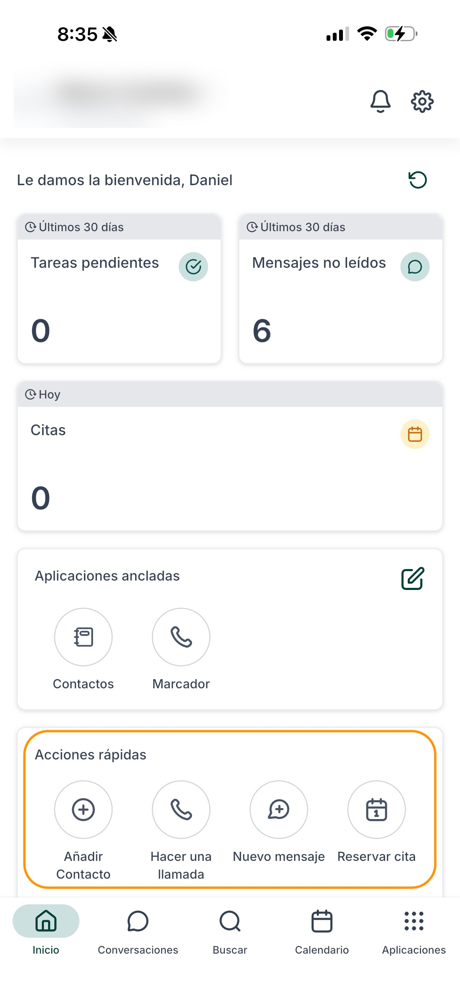
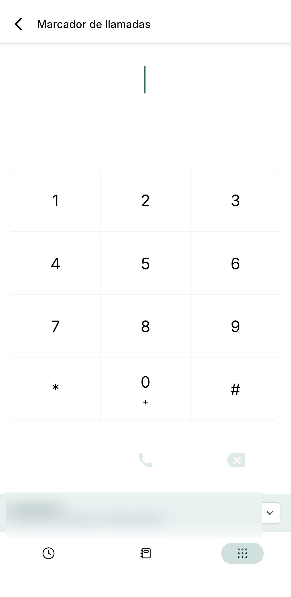
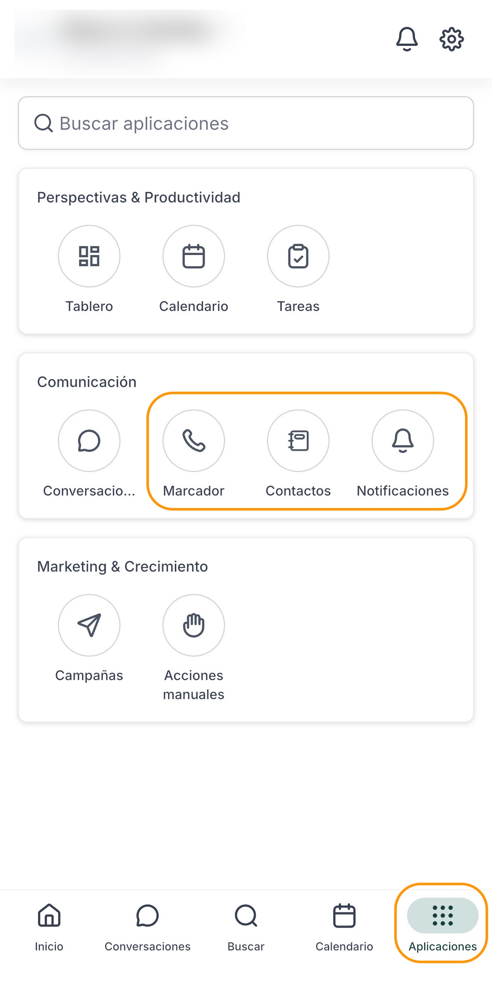
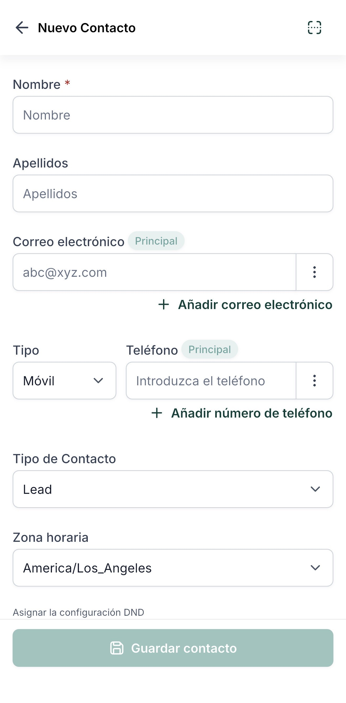
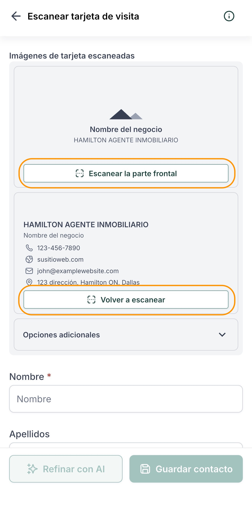
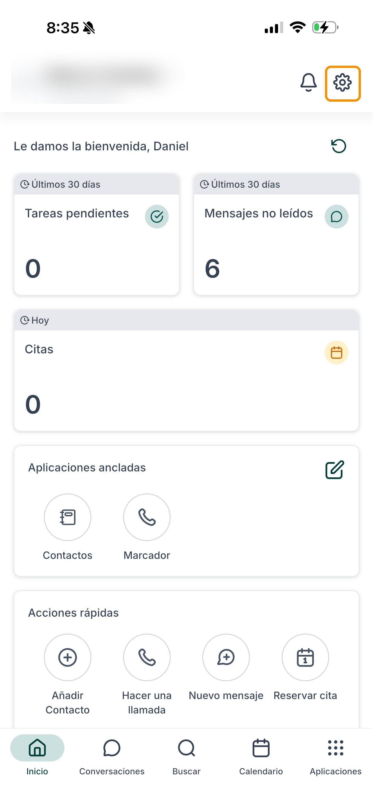
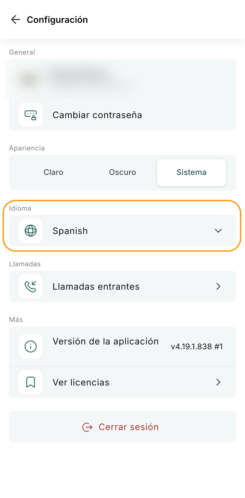

Todo tu negocio corre desde una app y un formulario. Aquí está lo que hace cada parte, con fotos. Vuelve cuando quieras.
Toca Conversaciones en el menú de abajo (el ícono de la burbuja, el segundo desde la izquierda). Cada texto, cliente y respuesta de reseña llega aquí. Esta es en serio la única pantalla que necesitas día a día.

En la pantalla de Conversaciones, toca el botón + (abajo a la derecha, marcado en verde arriba), y elige Nuevo Mensaje. Escribe el número de la persona o elige un contacto y textéale como siempre. Todo lo que mandas muestra tu número de negocio, y su respuesta regresa a este mismo buzón.
Desde la pantalla de inicio de la app puedes Hacer una Llamada o empezar un Nuevo Mensaje con un toque.

Tienes un nuevo número de negocio. Aquí está exactamente cómo funciona para que nada te confunda.
El número nuevo solo apunta a tu celular normal. Cuando alguien lo marca, tu teléfono suena como hoy. Contestas normal. Sin segundo teléfono. Si pierdes la llamada, el sistema le manda un texto de regreso a esa persona por ti para que no la pierdas.

Dos formas de llamar a un cliente, las dos sirven:
Pero da el NUEVO número de negocio en todos lados (Google, tarjetas, un imán en la troca, letreros, tus redes). Aquí está por qué importa:
Toca Apps (abajo a la derecha del menú) para encontrar tu Marcador, Contactos y Notificaciones todo en un solo lugar.

Dos formas fáciles de agregar a alguien a tus contactos:

A mano: escribe su nombre y número.

Escanea una tarjeta: apunta tu cámara y se llenan los datos.
¿Quieres la app en español o inglés? Toca el engrane (arriba a la derecha), luego Language (Idioma), y elige el que quieras.


Cada reseña, buena o mala, recibe una respuesta cálida y profesional con tu voz, sola. Tú nunca escribes una palabra.
Tus reseñas de 5 estrellas se convierten en gráficas y se publican en tu Facebook, Instagram y Google por ti.
Si un cliente no deja reseña, el sistema le recuerda amablemente durante unas semanas, y luego para.
Algunas cosas están hechas para correr solas. Si quieres un cambio, solo mándanos un texto y lo hacemos, así nada se rompe.